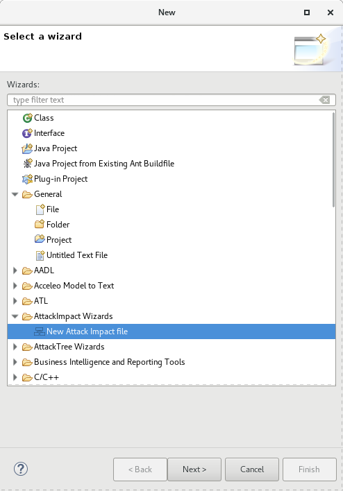

An Attack-Impact is a model that represents all the systems of an architecture with their interaction points and potential propagations of vulnerabilities. It is a graph that shows the components with boxes, vulnerabilities using around rounds and finally, connect them together using directed arrows.
The objective is to show how a vulnerability can propagate through the system architecture. Such a notation ultimately support design decisions by highlighting how security issues impact the system and help designer to detect and fix architecture weaknesses.
Implementation Concerns
Our Attack Impact editor relies on an EMF meta-model of an attack tree as well as a Sirius representation for it. The Sirius representation generates the graphical representation (graph) from the meta-model.
Examples of Attack Impact
To open an example of an Attack Tree, do the following
Create a new project by using New -> Project. Select the name of the project and click on Finish
Creating a New Project in Eclipse
Right click on the new project and select New -> Other and select
New Project, Other
Select the Attack Impact Wizard

Select Wizard
Choose the example you want (webserver or router), indicate a file name and click on Finish.
Select the Attack Impact example
Visualizing the Attack Impact
Make sure you have your Attack Impact file in your project. The file has the extension attackimpact. See the previous section to create an Attack Impact file example.
Switch to the Modeling Perspective. Check that the modeling perspective is activated as in the following picture. The icon is on the top right in the eclipse main window.
Opening Modeling
Make sure the project has the Modeling Nature. Right Click on your project and check the item Configure -> Convert to Modeling Project.
Check Modeling Nature
Select the Attack Tree Viewpoint. Right click on te project and select the following menu
Select Viewpoint
Select the Attack Impact Viewpoint
Selecting the Attack Impact Viewpoint
Finally, open the Attack Impact Representation. Select the model element (the Attack Impact Model EObject) and right click on it. Select New Representation and then new AttackImpactDiagram.
New Attack Impact
You should then get the following diagram.
New Attack Impact
Analyzing the Attack Impact
The Attack Impact editor includes build-in analysis capabilities. You can visualize the menu that offers the analysis options by doing a right click on a nod ein the Attack Impact diagram. This menu is shown below.
Attack Impact Analysis Menu
There are the following analysis available:
Generate Attack Tree: generate the attack tree from the selected component. The generated attack tree will have a root that is the selected node of the attack tree.
Show Impact: shows the impact of this component or vulnerability. It will then color all component being impact by the selected component or vulnerabilities.
Show Reverse Impact: do the reserve analysis than the show impact: it traverses the model backwards and color all components that contribute to corrupt the selected components.
Clear Impact: revert any color change in the model. If the user used the impact or reverse impact analysis, it will then remove the color on every box.
Editing an Attack Impact
This section has to be improved and ehanced.
Contact and Help
For any help and contact, please send an e-mail to Julien Delange